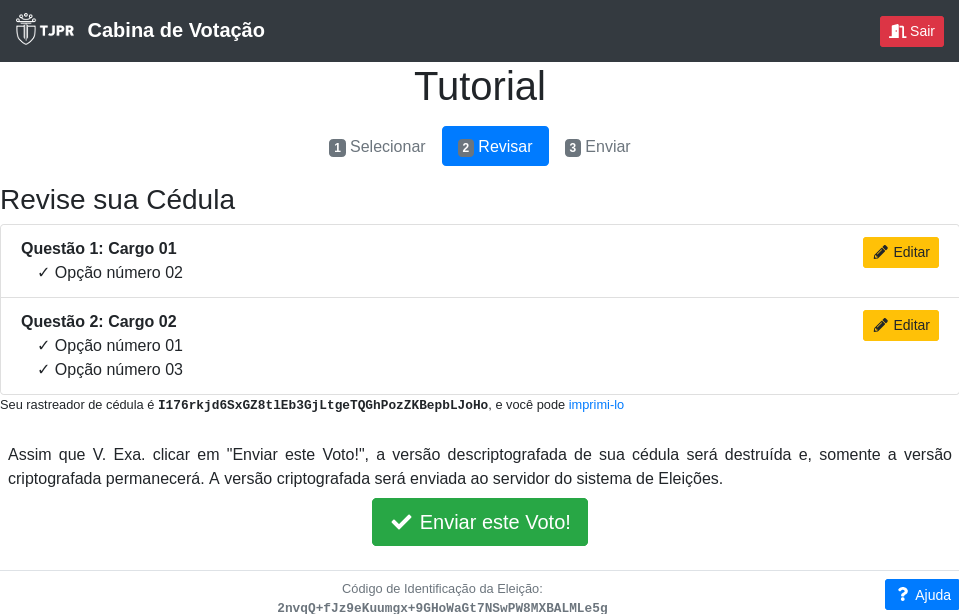
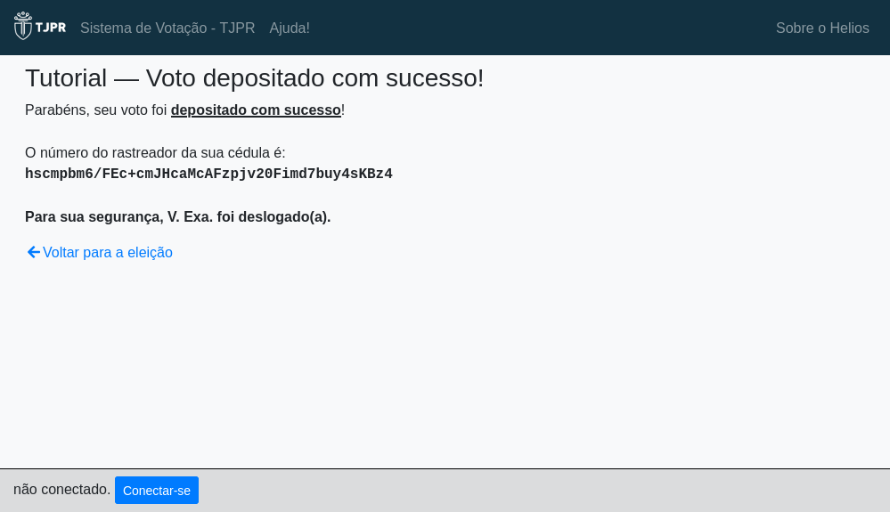

Como votar usando o Sistema de Eleições
-
Para acessar a cabina de votação, utilize suas credenciais do TJPR.
-
A página inicial contém as instruções, clique no botão Iniciar
-
Escolha os candidatos de acordo com a questão e se a eleição possuir mais de uma questão, então clique no botão Próxima Questão.
-
Para a última questão, faça suas escolhas e clique no botão Próximo passo.
-
Neste momento, suas escolhas são criptografadas em seu navegador para que, posteriormente, possam ser enviadas para contabilização.
-
Nesta etapa é possível revisar as escolhas de voto. Caso esteja tudo correto, clique no botão Enviar este Voto!.
- Se desejar alterar o voto, basta clicar no botão Editar e a tela retornará para a cédula de votação com todos os candidatos disponíveis para nova escolha.

-
Clique no botão Depositar Cédula para depositar sua cédula na urna. Se não deseja depositar a cédula, clique no botão Cancelar.
- Ao depositar a cédula na urna eletrônica o voto será contabilizado para a referida eleição.

-
Parabéns, seu voto foi depositado com sucesso. 